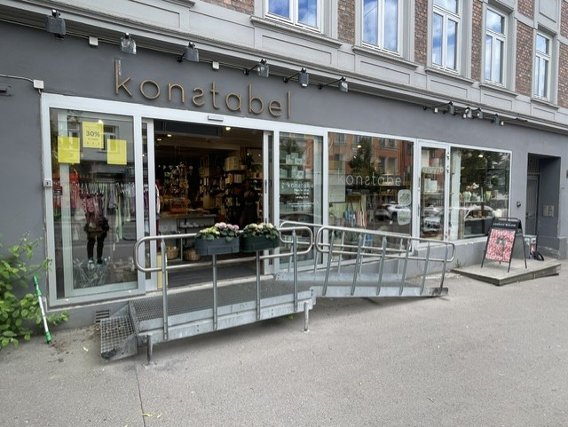
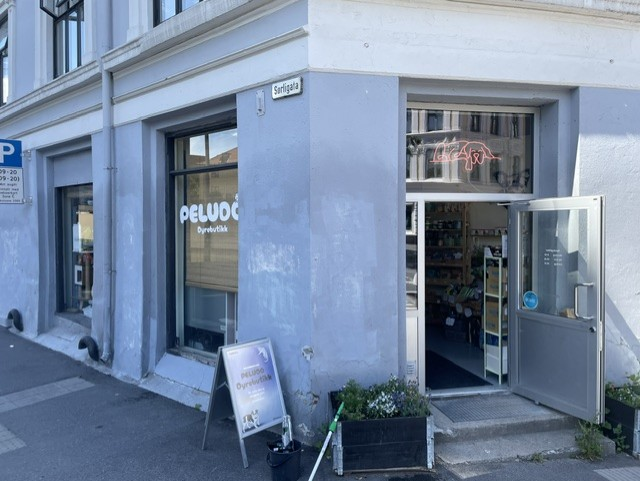

Referanser
Ekte kunder og utførte oppdrag
Her viser vi et utvalg av næringslokaler vi har jobbet med. Hovedsiden beholder den større bildefremvisningen, mens denne siden viser referansene mer ryddig og salgsrettet.

Månedlig abonnement
Konstabel
Konstabel var blant Apex Cleanings første abonnementskunder. Vi følger opp med fast vindusvask for å holde butikkfront og showroom rent, innbydende og enkelt å vedlikeholde over tid.

Månedlig abonnement
Sport&Spine
Sport&Spine har valgt en fast avtale for å holde vinduene presentable for kunder og pasienter gjennom året.

Peludo
Tidligere utført vindusvask for næringslokale på Tøyen.
Butikkfront
Rene vinduer bidrar til et bedre førsteinntrykk fra gaten.

Klinikk
Fast vedlikehold gjør lokalet mer innbydende for besøkende.